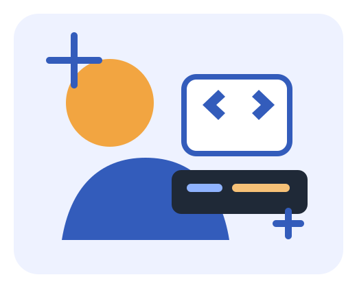
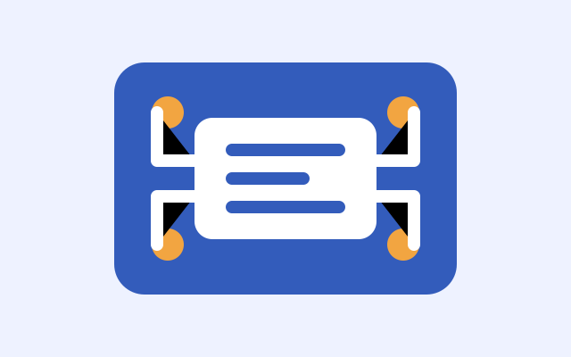

Engineering mindset
I like breaking large technical problems into clear steps, testing each part, and improving the final result.
Welcome to my homepage
I am a Computer Engineering student building practical projects across web development, hardware, and data-driven problem solving.

Quick overview
I like breaking large technical problems into clear steps, testing each part, and improving the final result.
This site uses only vanilla HTML, CSS, and ES modules, with no component library or jQuery.
The homepage includes a mini project filter and a study quote generator made with original JavaScript.
Projects
Web
A responsive homepage with semantic HTML, organized CSS, and ES module JavaScript.

Hardware
Small experiments focused on circuits, sensors, timing, and readable test results.
Data
Organizing raw measurements into charts and summaries that support better decisions.
Original component
Click the button to receive a short focus prompt. This feature is original JavaScript and gives the page a small interactive identity.
Pick one task, set a timer, and make the first step easy.